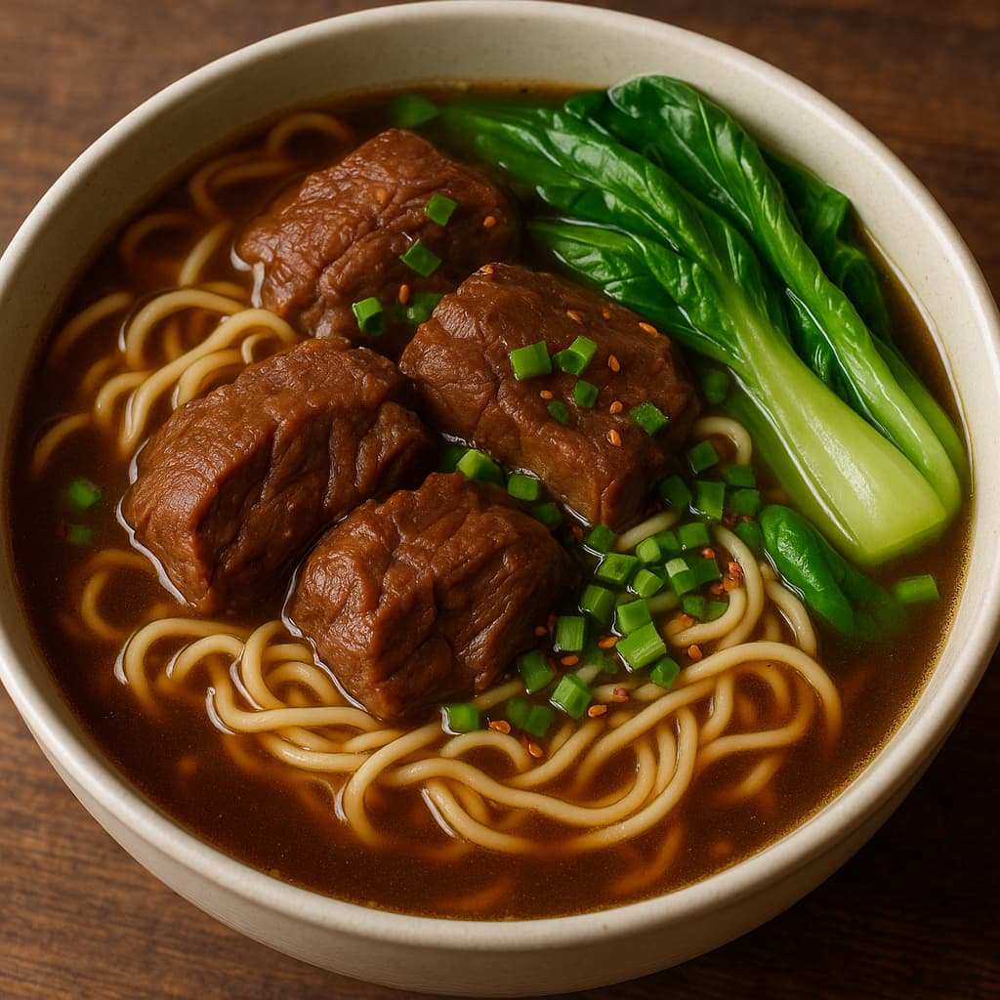

🜠Sejarah & Informasi Lengkap Beef Noodle Soup - Lao Shan Dong è€å±±æ±ç‰›è‚‰éºº
🥢 Sejarah & Latar Belakang
Beef Noodle Soup (牛肉麵 - Niúròu Mià n) adalah hidangan ikonik dari Taiwan, meskipun asal-usulnya berasal dari daratan Tiongkok. Hidangan ini merupakan perpaduan antara kuliner etnis Hui Muslim dari Tiongkok barat laut dan cita rasa lokal Taiwan.
- Asal mula: Dipengaruhi oleh Lanzhou Lamian dari komunitas Muslim Hui.
- Perkembangan: Versi khas Taiwan berkembang setelah migrasi besar dari Tiongkok ke Taiwan pasca 1949.
- Versi populer: Hong Shao Niu Rou Mian (紅燒牛肉麵) dengan kuah merah berempah.
🧧 Tradisi & Penggunaan Budaya
Meskipun bukan makanan untuk hari raya tertentu, Beef Noodle Soup adalah simbol kehangatan dan makanan sehari-hari yang populer.
- Disajikan saat cuaca dingin atau acara keluarga.
- Setiap tahun diadakan Taipei International Beef Noodle Festival.
- Dianggap sebagai kebanggaan kuliner nasional Taiwan.
🜠Kandungan & Komposisi
Beef Noodle Soup kaya akan rasa dan gizi:
Bahan Utama:
- Daging sapi (brisket, tendon, shank)
- Mi gandum (tebal atau mi tarik tangan)
- Kaldu rempah (kecap asin, jahe, bawang putih, star anise, dll)
- Pelengkap: sayur asin, daun bawang, minyak cabai
Informasi Gizi (rata-rata per porsi):
- Kalori: ±500–700 kkal
- Protein: 30–40g
- Lemak: 20–30g
- Karbohidrat: 50–70g
- Sodium: Tinggi (karena kuah berbumbu)
Resep Cara Membuat:
Kami telah menyediakan Resep" terbaik dan Cara membuatnya untuk para BUnda" sekalian bisa kunjungi Web Site Kami dengan click disini
📠Rekomendasi Tempat di Taiwan
- Yong Kang Beef Noodle (永康牛肉麵) âï¸âï¸âï¸âï¸âï¸ â€“ Taipei
- Lao Zhang Beef Noodles (老張牛肉麵) âï¸âï¸âï¸âï¸ â€“ Taipei
- Lin Dong Fang Beef Noodle (林東芳牛肉麵) âï¸âï¸âï¸âï¸ â€“ Taipei
- San Shan Xiao Guan (三商巧福) âï¸âï¸âï¸ â€“ Tersedia di banyak lokasi
Rekomendasi Tempat di Indonesia
Jakarta:
- Bubur Kwang Tung âï¸âï¸âï¸âï¸ â€“ Pecenongan
- Imperial Treasure Lamian âï¸âï¸âï¸âï¸ â€“ Mall Indonesia
- Din Tai Fung âï¸âï¸âï¸ â€“ Plaza Senayan, Grand Indonesia
- Gokana Ramen & Teppan âï¸âï¸âï¸ â€“ Beberapa cabang
Bandung:
- Waroeng Taiwan 88 âï¸âï¸âï¸âï¸ â€“ Cihampelas
- Hana Ramen âï¸âï¸âï¸âï¸ â€“ PVJ Mall